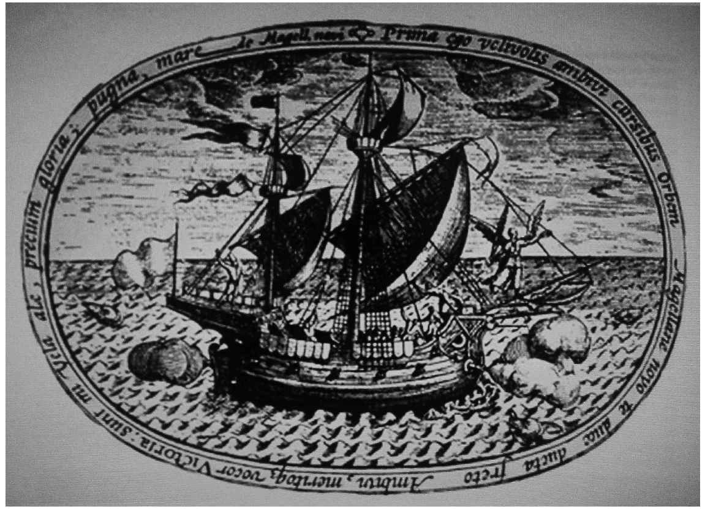
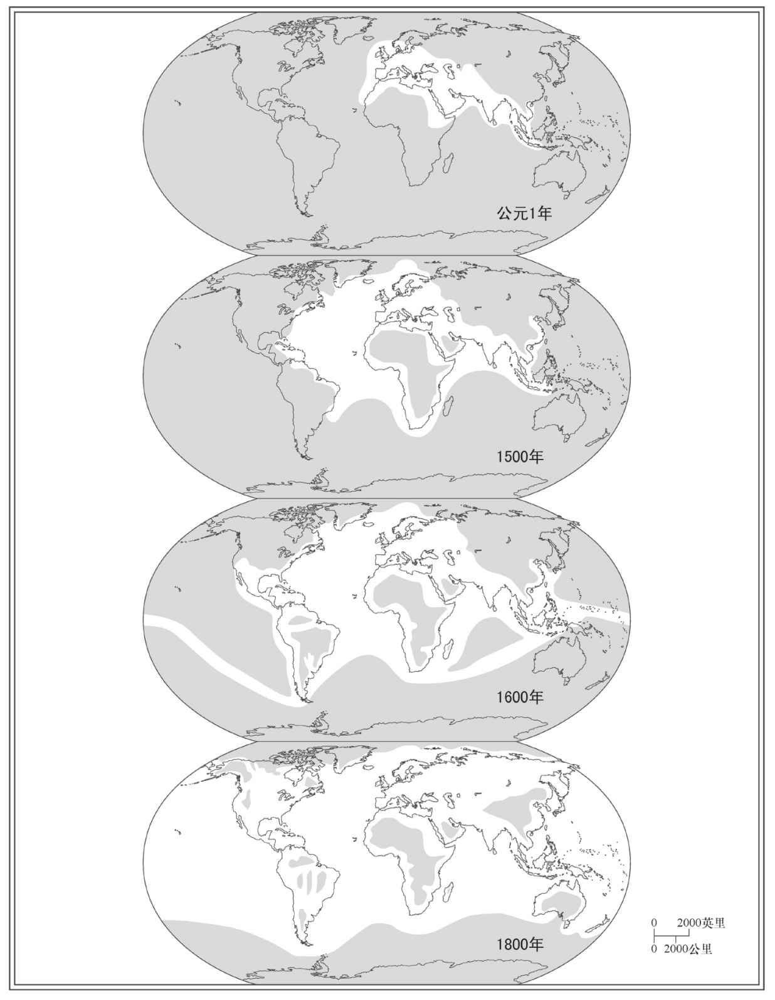

当欧洲人开始海外扩张时，他们采用了一项便利的原则，即他们有权把异教徒的土地占为己有而无须顾及有关的诸土著民族。还有一种至少得到葡萄牙和西班牙承认的原则是，罗马教皇有权分配任何不为基督教统治者所拥有地区的统治权。早在1454年，教皇尼古拉五世就下过一道训令，授权葡萄牙人占有他们在沿非洲海岸向印度行进时所发现的一些地区。当哥伦布从他确信自己已抵达东印度群岛的首次远航中返回时，西班牙宫廷担心葡萄牙人会提出反要求，遂敦促教皇亚历山大六世承认西班牙的专有权。1493年5月4日，亚历山大教皇在亚速尔群岛和佛得角群岛以西100里格（一种古老的陆地与海洋测量单位，1里格等于5572.2米。——编注）处划定一分界线；线以西地区授予西班牙，以东则授予葡萄牙。1494年6月7日，西班牙和葡萄牙议定《托尔德西拉斯条约》，将分界线再西移270里格。这一改变的结果是使葡萄牙获得了对美洲大陆上的巴西的所有权。
葡萄牙继达·伽马远航之后在香料贸易中获得的财富，诱发其他欧洲国家狂热地探寻别的通往东印度群岛的航线。哥伦布寻找中国一次又一次的失败，并没有毁掉向西航行抵达亚洲的希望。从到那时为止发现的种种荒凉地带之间穿过也许仍是可能的。这是16世纪初出现的一类新的职业探险家的目标。这些探险家多半是意大利人和葡萄牙人——当时最有知识、最富经验的探险家，他们乐于为任何愿意资助他们的君主进行探险。意大利人中包括为葡萄牙和西班牙航海的亚美利哥·韦斯普奇、为法国航海的约翰·韦拉扎诺和为英国航海的卡伯特父子；葡萄牙人中则有胡安·迪亚斯·德索利斯、胡安·费尔南德斯和斐迪南·麦哲伦，他们都为西班牙航海。
麦哲伦是唯一一位找到通往亚洲的航道的人。西班牙派他去找这条道，是因为随着香料货物经常运至里斯本，西班牙人认识到在围绕香料群岛的这场竞赛中自己正被打败。西班牙声称《托尔德西拉斯条约》中规定的分界线是笔直环绕全球的，遂派麦哲伦去开辟西往亚洲的航道，希望至少香料群岛中的一些岛屿位于分界线的西班牙一侧。
在这一航海事业的伟大诗篇中，麦哲伦率领一支由五艘均为100吨位的帆船组成的船队，于1519年8月10日从塞维利亚起航（9月从桑卢卡尔港正式出发），至1520年10月，抵达如今以他的名字命名的海峡，但是，由于海上波涛汹涌，他足足花了一个多月才穿过该海峡驶入太平洋。其间，一艘船失事，另一艘船被遗弃，他率领余下的三艘船沿智利海岸向北航行，至南纬50度处时折向西北。

图151 麦哲伦航海图。
在后面80天中，他们仅见到两座杳无人迹的荒岛。由于缺粮少水，麦哲伦和他的船员们患上了严重的“坏血病”。1521年3月6日，他们驶抵一座岛屿，可能是关岛，在那里得到了粮食。同月16日，他们到达菲律宾。4月，麦哲伦和其手下40名船员在当地一次战斗中被杀。残存的西班牙人依靠当地领港员的帮助，航行到婆罗洲，再从那里抵达他们的目的地摩鹿加群岛即香料群岛，他们最后抵达香料群岛的时间是1521年11月。当时已在那里的葡萄牙人毫不迟疑地进攻剩下的两艘西班牙船（还有一艘船已被丢弃在菲律宾）。尽管遇到重重障碍，西班牙人仍然获得了丁香货物，然后取道不同的航路起航回国。试图重越太平洋的一艘船因遇逆风而折回，被葡萄牙人捕获。另一艘船则成功地完成了一次令人难以置信的航行：它先穿过望加锡海峡、越过印度洋，然后绕过好望角，沿着整个非洲西岸北航。1522年9月6日，这艘唯一幸存的船——船体严重漏水、船员已大批死亡的“维多利亚号”，缓慢地驶入塞维利亚港。不过，这一船香料货物的价值足以支付整个远征队的费用。
随后，西班牙人又派出了一支远征队，它于1524年到达香料群岛。但是，这次远征是一次惨败，因为葡萄牙人已在那里站稳脚跟，向他们挑战已无利可图。此外，西班牙国王当时正同法国交战，急需军费。因此，1529年，西班牙国王同葡萄牙签订了《萨拉戈萨条约》。根据这一条约，他放弃了对香料群岛的全部要求，并接受在香料群岛以东15度处划定的分界线；作为回报，他得到35万个达卡金币。这一条约标志着地理大发现史上一个重要章节的结束（见地图22）。葡萄牙人对香料群岛的控制一直持续到1605年该群岛落入荷兰人手中之时，而西班牙人则继续对菲律宾群岛感兴趣，并最后于1571年征服它们，尽管该群岛位于《萨拉戈萨条约》规定的分界线以东。不过，此前很久，西班牙已将注意力转向美洲大陆，因为在那里发现了其价值和东方的香料不相上下的大笔财富。

地图22 西方对全球的了解（公元1—1800年）